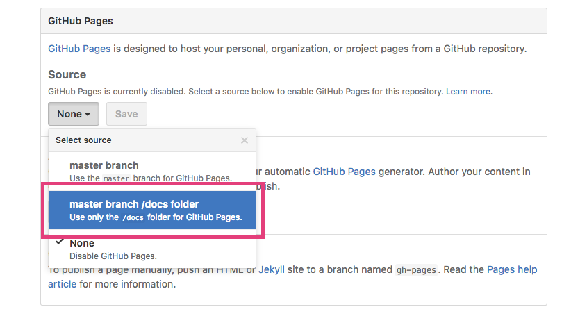

GitHub Pages
GitHubでWebページを
公開する方法
～Part2～
前回までのおさらい
Part1
"gh-pages"というブランチ作って公開
GitHub Pagesとは…
GitHubの公式が提供するサービス
Webページをネットに公開することができる
やり方
"gh-pages"というブランチを作成
以上！！
必要なファイルを"gh-pages"ブランチに
突っ込む必要はあるけど
公開されるURLは、http://ユーザー.github.io/リポジトリ/です
デメリット
"gh-pages"ブランチと
"master"ブランチで
管理するブランチが複数になる
Part2
"master"ブランチでも公開可能に！
やり方
GitHubのリポジトリページ上で、
[Setting]→[GitHub Pages]→[Source]で
[master branch]を指定

以上！！
指定方法によっては、
docsフォルダ以下のみ指定することも可能！
改めてメリット
メリット1
サーバー立てる必要無し
メリット2
準備簡単
(GitHubに慣れていれば特に。)
メリット3
jsなんかも動く！
メリット4
GitHub上でササっと修正も可！
メリット5
最新ファイルを一括でmasterブランチで管理可！
改めて注意点
注意点1
動的サイト作成は厳しい
（PHPなどのサーバーサイドプログラム）
注意点2
データベース利用も厳しい
（PHPなどのサーバーサイドプログラムが
使えないから）
GitHub Pagesは、
あくまで【静的なページ】を公開するツール
以上です。